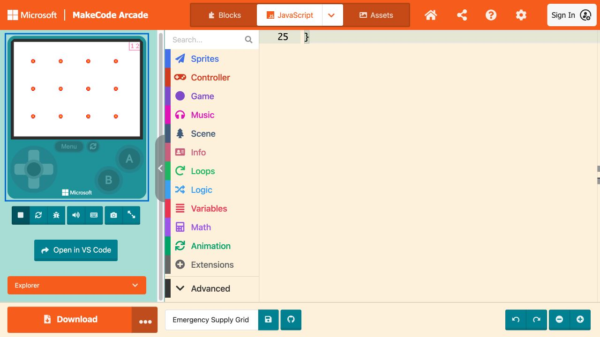

TEXT-CODE BRIDGE · DAY 2
Lesson 4: Text Code — Emergency Supply Grid
Emergency Supply Grid · MakeCode Arcade JavaScript
Daily Learning Contract
Objective: Students will use a software design process to modify a text-based real-world program with named data types, operations, and nested loops, then test and explain the result.
TEKS:
- §126.19(c)(1)(A) — decompose real-world problems into structured parts using pseudocode;
- §126.19(c)(1)(C) — practice abstraction by developing a generalized algorithm that can solve different types of problems;
- §126.19(c)(1)(E) — develop, compare, and improve algorithms for a specific task to solve a problem; and
- §126.19(c)(1)(F) — analyze the benefits of using iteration (code and sequence repetition) in algorithms.
- §126.19(c)(2)(A) — construct named variables with multiple data types and perform operations on their values;
- §126.19(c)(2)(B) — use a software design process to create text-based programs with nested loops that address different subproblems within a real-world context; and
- §126.19(c)(2)(C) — modify and implement previously written code to develop improved programs.
Demonstration of learning: Modified JavaScript, grid/score screenshot, prediction and controlled-test evidence, and explanation of how the nested loops address row and column subproblems.
Open the tools and files
Open MakeCode Arcade · Core starter code
- English: Make a Google copy · Word · PDF
- Español: Crear una copia de Google · Word · PDF
English
- Start from your corrected Day 1 project or the Core Starter text file.
- Choose Mission A: 4 rows, 5 columns, xSpacing 28, ySpacing 25; or Mission B: 2 rows, 6 columns, xSpacing 24, ySpacing 50.
- Predict the total supplies and one x/y position before Run.
- Change missionName and use priorityMode to control the priority route. Keep all work in JavaScript view.
- Run, capture the complete grid and visible score, and make one controlled revision if markers overlap or leave the screen.
- Submit readable code and simulator screenshots plus the completed Passport trace/test evidence and explanation.
Español
- Empieza con tu proyecto corregido del Día 1 o con el archivo Core Starter.
- Escoge Misión A: 4 filas, 5 columnas, xSpacing 28, ySpacing 25; o Misión B: 2 filas, 6 columnas, xSpacing 24, ySpacing 50.
- Predice el total y una posición x/y antes de ejecutar.
- Cambia missionName y usa priorityMode para controlar la ruta de prioridad. Trabaja en la vista JavaScript.
- Ejecuta, captura la cuadrícula completa y la puntuación, y haz una revisión controlada si los marcadores se enciman o salen de la pantalla.
- Entrega capturas legibles del código y simulador, la evidencia del Pasaporte y tu explicación.

Turn in / Entrega
Modified JavaScript, grid/score screenshot, prediction and controlled-test evidence, and explanation of how the nested loops address row and column subproblems. Upload screenshots or files through this assignment. Do not submit your school password, personal email, or a public profile.